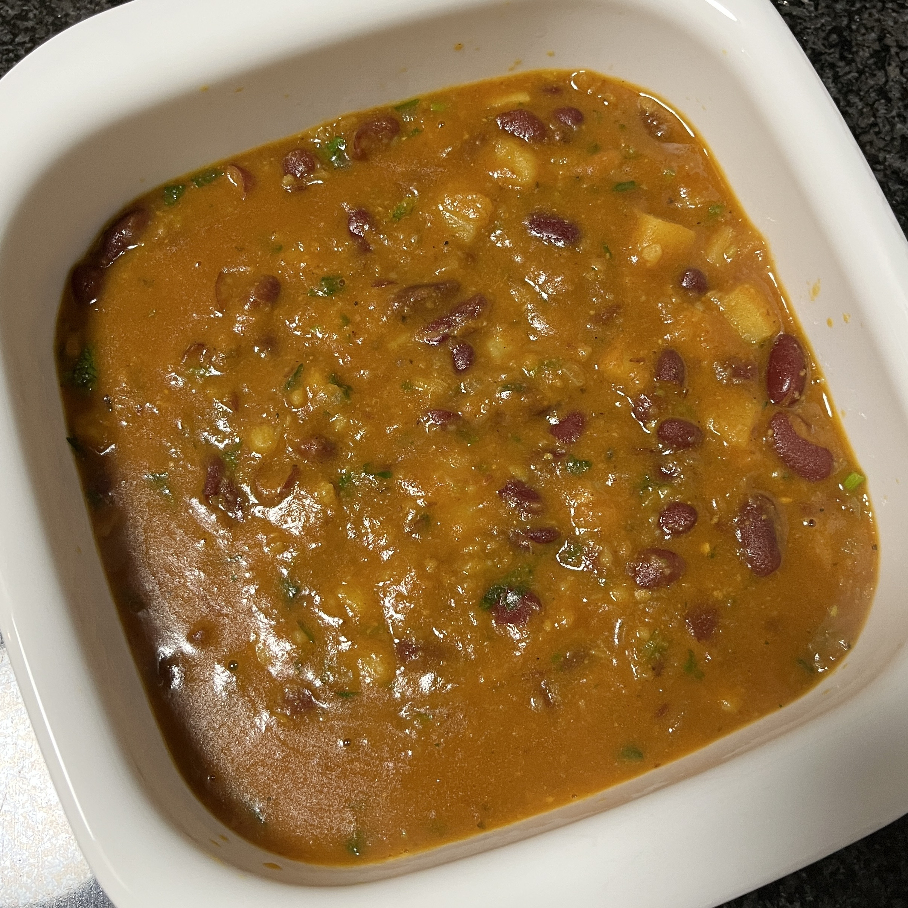

Home
Mum's Rajma

A hearty bowl of rajma.
Overview
Rajma, a North Indian comfort food classic, is a hearty,
soul-satisfying dish made from red kidney beans simmered in a thick,
spiced tomato gravy. Think of it as India's answer to chili, but with
a deeper, more aromatic flavor profile thanks to layers of cumin,
coriander, ginger, garlic and garam masala.
Traditionally, it's served with steamed basmati rice, hence the
beloved pairing rajma chawal, though it's equally delicious
with roti or naan. Below, is a
quick and easy, one pot recipe using a pressure
cooker.
Ingredients
- 3 tbsps of olive oil
- 1/2 red onion, finely chopped
- 1 tsp of garlic paste
- 1 tsp of ginger paste
- 1/2 cup of tomato puree
- Spices:
- 1 clove
- 1 cardamom pod
- A small piece of cinnamon
- 1 tsp sambar powder
- 1/2 tsp turmeric powder
- 1/2 tsp chilli powder
- 1/2 tsp coriander powder
- 1/2 tsp cumin powder
- A pinch of garam masala
- 1 can of red kidney beans, drained and rinsed
- 1/3 cup of water
- 3 tsps salt
- 1 tsp of jaggery powder
- (Optional) 2-3 sticks of coriander, finely chopped
Steps
- To a small pressure cooker over medium heat, add the oil.
-
Add in the clove, cinnamon and cardamom pod. (Tip:
Ensure the pod has been split for a richer aroma.)
-
Add the chopped onion, as well as the spoons of ginger and garlic paste.
Stir well.
-
Add the tomato puree. To this, add the remainder of the powdered spices.
Mix thoroughly.
-
Add in the kidney beans. Pour in the water, add the jaggery and salt.
Mix well and taste. (Tip: Now is the best time to
modify the flavour of the curry if you wish to.)
-
Continue mixing over medium heat until the oil separates and the mixture
develops a glossy sheen.
-
At this stage, close the pressure cooker securely and add a standard
weight to the steam vent. Set the stove to the
lowest heat setting and wait for 2 whistles.
This should take around 15-20 mins.
-
Once the second whistle sounds, turn off the heat.
DO NOT OPEN at this stage, as the vessel is still
pressurised!
Wait for a further 10 mins.
-
After some time has elapsed, gently nudge the weight of the pressure
cooker to see if built-up steam is still being released. If the sound of
the steam being released is feeble, remove the weight.
-
Open the lid of the pressure cooker and check the consistency of the
rajma. If required, reduce over medium heat.
- (Optional) Add chopped coriander and stir well.
- Serve with rice, roti or a bread of your choosing.